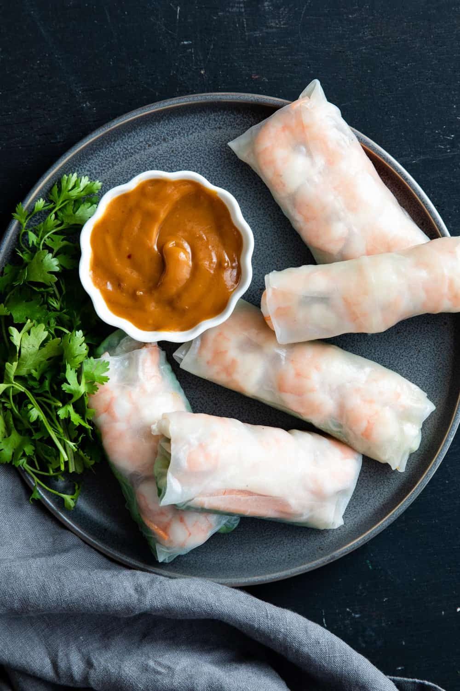

Shrimp Springroll

Description
Cooked shrimp are one of my favorite protein choices and they make a great flavor and texture combo when paired up with veggies. Try this healthy Shrimp Spring Rolls recipe with a Spicy Almond Dipping Sauce and see for yourself!
Ingredients
For the Shrimp Spring Rolls:
- 6 rice spring roll papers
- 1 tbsp olive oil
- 12 oz shrimp, deveined
- 1/2 tsp sea salt
- 1/4 tsp ground black pepper
- 1 cucumber, thinly sliced
- 3 carrots, thinly sliced
- 6 leaves green leaf lettuce
- 12 mint leaves
For the Spicy Almond Dipping Sauce:
- 2 tbsp almond butter
- 2 tbsp hoisin sauce
- 1 tsp Sriracha sauce
- 1 tsp rice wine vinegar
Steps
For the Shrimp Spring Rolls:
- Cook the shrimp in olive oil over medium-high heat and season with sea salt and ground black pepper. Once fully cooked and no longer transparent, remove from heat and allow to cool.
- Dip one sheet of rice paper in warm water for about 3-4 seconds or hold under running water, until the paper becomes fully moistened with water. Then, lay the wrapper onto your work surface which should be clean and flat.
- Near the bottom of the spring roll in the center, lay out the cucumber, carrots, green leaf lettuce, fresh mint leaves, and cooked shrimp. Line the shrimp in a row.
- Fold the bottom over the end of the veggies and shrimp, then fold the uncovered sides inward, then tightly roll the wrapper all the way, as tightly wrapped as possible. Then repeat with the remaining ingredients.
For the Shrimp Spring Rolls:
- In a small mixing bowl, combine the almond butter, hoisin sauce, Sriracha, and rice wine vinegar.
- Stir until smooth. You can soften the almond butter by microwaving for 10-15 seconds, if needed.
Recipe from: https://www.asweetpeachef.com/healthy-spring-roll-recipes/